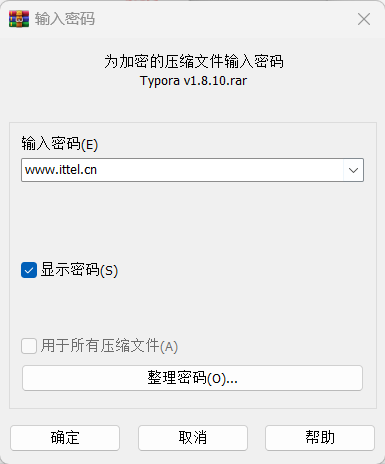
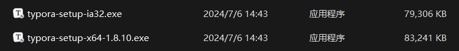
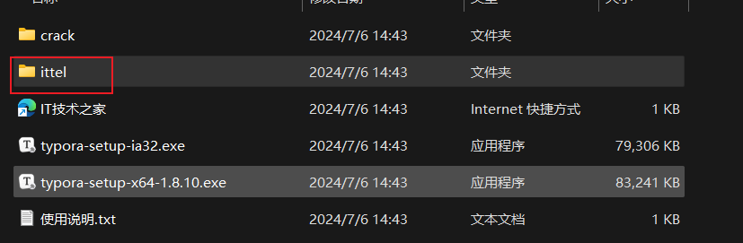
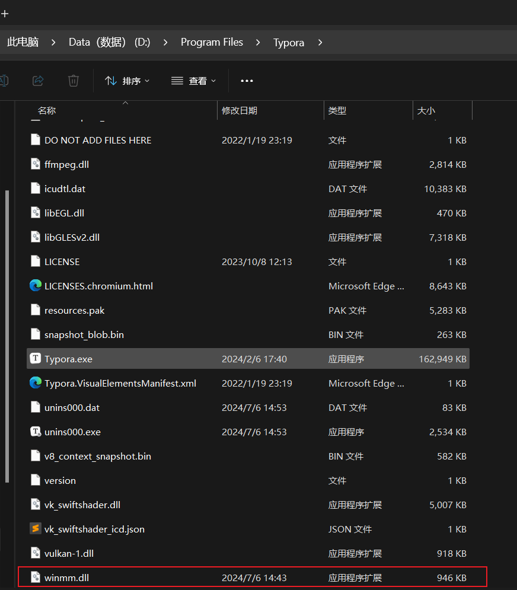
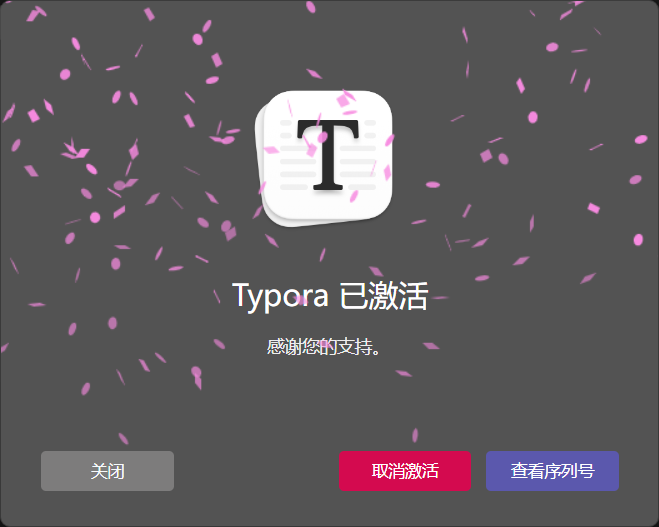
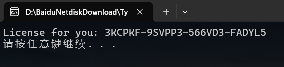
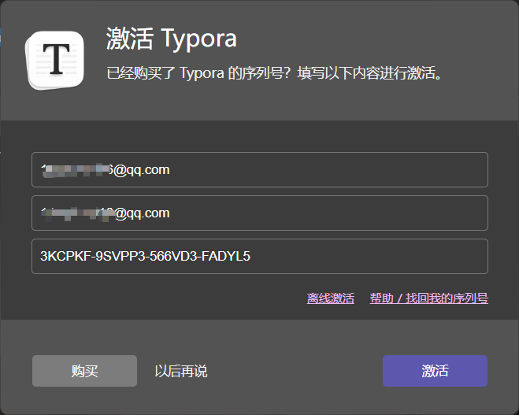

[TOC]
Download
解压
解压密码
1 | www.ittel.cn |

安装

激活
方式1 (亲测可行)
将 ittel/winmm.dll 复制到Typora安装目录下


最后重启 查看许可证

方式2 (我不行)
How to use?
运行 typora-setup-x64-1.7.0-dev-cracked.exe 安装Typora
运行 LicenseGen.exe 获得激活码

输入你的邮箱和得到的激活码

完美激活！
这里也提供几个可以用的激活码
1 | VMLM7G-2A45QN-DBM3UZ-GSC7U3 |